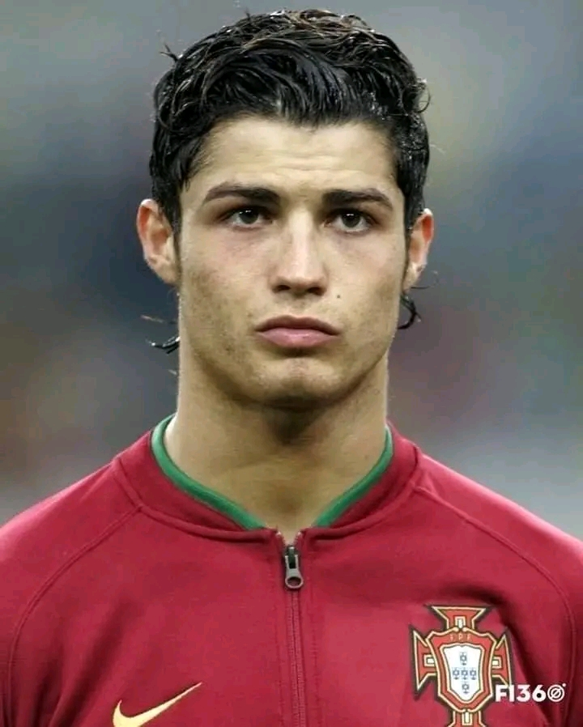
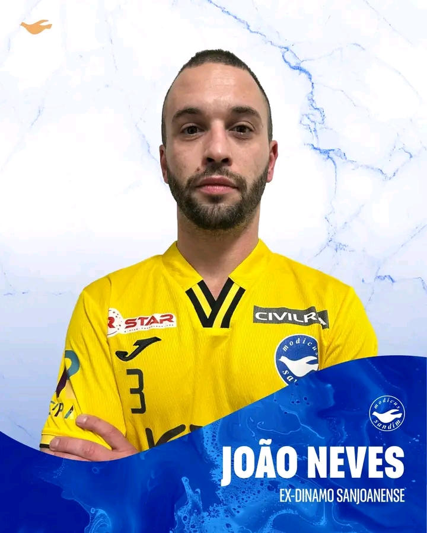

Cristiano Ronaldo é eleito o melhor jogador de todos os tempos
Na terça-feira, Cristiano Ronaldo foi eleito o melhor jogador de todos os tempos pelo jornal mais importante do planeta (o nosso). O craque português provou para todos que, sem dúvidas, é o melhor de todos os tempos.
Open da Austrália

À medida que o Open da Austrália chega ao final, é tempo de refletir sobre esta incrível jornada. Foi uma experiência entusiasmante e a Haier orgulha-se de ter feito parte deste prestigiante evento como patrocinador oficial 🎾 Os nossos parabéns ao Jannik Sinner, que provou, mais uma vez, que a dedicação e o trabalho árduo conduzem à grandeza e ao momento de se tornar o vencedor do Open da Austrália! 👏🔥 Mas a jornada não termina aqui. A Haier está a fazer o aquecimento para o próximo torneio, continuando a apoiar os melhores atletas do mundo na sua busca pela excelência.
João Neves é reforço
Notícias Seniores Futsal João Neves é reforço ✍ 🔙 ex-Dínamo Sanjoanense O Guarda Redes João Neves vem assim reforçar o Modicus para a fase decisiva de apuramento de campeão e constituirá uma mais valia para o plantel às ordens do Mister Ricardo Ferreira. Bem-vindo, Neves Força, Somos Modicus.
NBA
IMPARÁVEL! 🔥🥰 No jogo entre Lakers e Pelicans, LeBron James atingiu mais uma marca expressiva na carreira. O astro se tornou o 5º jogador com mais partidas disputadas na história da NBA. LeBron atingiu a marca de 1.505 jogos, ultrapassando John Stockton, lendário armador do Utah Jazz, que possui 1.504. 📷 Getty Images #lebronjames #lakers #nba #basquete